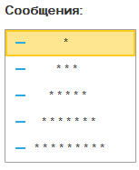

1C Rush > Циклы
Что такое цикл?
Цикл – это конструкция, которая позволяет выполнить один и тот же блок кода многократно. Например, вывести числа от 1 до 10, обработать все строки таблицы, заполнить массив значениями. В 1С:Предприятие есть три вида циклов:
Цикл по счётчику (с фиксированным количеством повторений).
Цикл по коллекции (обход коллекции)
Цикл по условию (выполняется пока истинно условие).
Цикл по счётчику
Цикл выполняет блок кода заданное количество раз. Управляет им специальная переменная — счётчик.
В заголовке цикла указываются начальное и конечное значения счётчика.
На каждой итерации счётчик автоматически увеличивается на 1, пока не превысит конечное значение.
Как только счётчик становится больше конечного значения, цикл завершается.
Если начальное значение больше конечного, тело цикла не выполнится ни разу.
Пишется в виде
Для <Счётчик> =
<НачальноеЗначение> По
<КонечноеЗначение> Цикл
Цикл по коллекции
Цикл по коллекции используется для перебора элементов коллекции (массива, списка, таблицы значений и т.д.).
Он не требует знания индексов — на каждом шаге переменная автоматически получает очередной элемент коллекции.
Пишется конструкция так:
Для каждого <Элемент>
Из
<Коллекция> Цикл
.
Затем идёт тело цикла (действия с элементом), а завершается всё ключевым словом КонецЦикла. Такой цикл удобен, когда нужно обработать все элементы подряд, не заботясь о количестве шагов.
Цикл по условию
Цикл Пока … Цикл выполняется до тех пор, пока логическое выражение истинно.
Проверка условия происходит перед каждой итерацией. Если условие ложно с самого начала, цикл не выполнится ни разу. Пишется конструкция так:
Пока <ЛогическоеВыражение> Цикл
. Важно: чтобы цикл не стал бесконечным, внутри него должно быть действие, которое рано или поздно сделает условие ложным (например, увеличение счётчика или изменение проверяемой переменной).
Управление ходом цикла
Иногда нужно досрочно выйти из цикла или пропустить текущую итерацию. Для этого служат два оператора Прервать и Продолжить.
1. Прервать
Немедленно завершает выполнение цикла. Управление передаётся оператору, следующему за КонецЦикла. Используется, когда дальнейшее выполнение цикла потеряло смысл (например, нашли нужный элемент).
2. Продолжить
Переходит к следующей итерации цикла, пропуская оставшийся код в текущей итерации. Полезно, когда при определённых условиях не нужно выполнять все действия.
Вложенные циклы
Внутри одного цикла может находиться другой. Это называется вложенными циклами. Например, для обработки двумерного массива или таблицы (строки и колонки). Внутренний цикл полностью выполняется на каждой итерации внешнего.

Результат выполнения
Сравнение видов циклов
| Вид цикла | Когда использовать | Преимущества |
|---|---|---|
Для ... По ... Цикл |
Известно точное количество итераций, нужен счётчик. | Простой, понятный, автоматическое изменение счётчика. |
Для каждого ... Из ... Цикл |
Нужно перебрать все элементы коллекции (массив, таблица, соответствие). | Не нужно заботиться об индексах, код читается как естественный язык. |
Пока ... Цикл |
Количество итераций неизвестно, зависит от условия (поиск, ввод данных). | Гибкость – можно остановить в любой момент. |